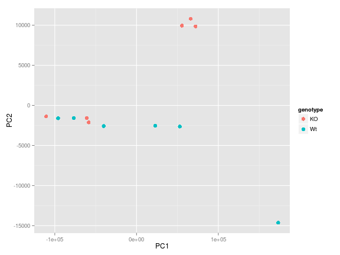
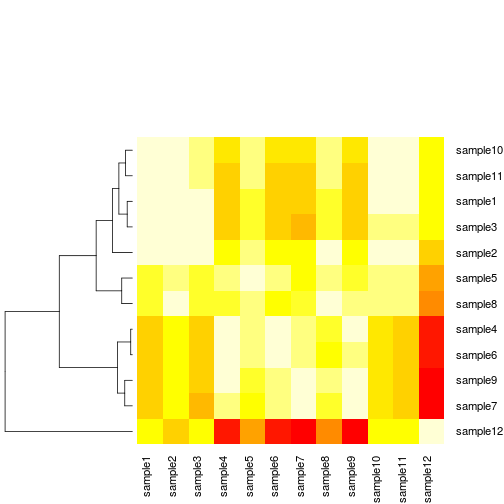

Analyzing and Plotting Data
Learning Objectives
- Generating simple statistics
- Basic plots
- Advanced plots (introducing
ggplot) - Writing images (and other things) to file
Calculating statistics
Let's get a closer look at our data. Each column represents a sample in our experiment, and each sample has ~38K values corresponding to the expression of different transcripts. Suppose we wanted to compute the average value for a sample, or the minimum and maximum values? The R base package provides many built-in functions such as mean, median, min, max, and range. Try computing the mean for "sample1" (Hint: apply what you have learned previously on indexing)
mean(annotated_rpkm[,'sample1'])Hmm, we just get NA. That's because we don't have the values for every transcript in this sample and missing data is recorded as NA. By default, all R functions operating on vectors that contains missing data will return NA. It's a way to make sure that users know they have missing data, and make a conscious decision on how to deal with it.
When dealing with simple statistics like the mean, the easiest way to ignore NA (the missing data) is to use na.rm=TRUE (rm stands for remove). Try computing the mean again, also test out some of the other functions.
# Mean
mean(annotated_rpkm[,'sample1'], na.rm=T)
# Maximum
max(annotated_rpkm[,'sample1'], na.rm=T)
# Minimum
min(annotated_rpkm[,'sample1'], na.rm=T)In some cases, it might be useful to remove the missing data from the vector. For this purpose, R comes with the function na.omit to generate a vector that has NA's removed. For some applications, it's useful to keep all observations, for others, it might be best to remove all observations that contain missing data. The function complete.cases() returns a logical vector indicating which rows have no missing values. We can use the logical vector to remove rows that contain at least one missing observation. If we do this on our data, how many rows are we left with?
rpkm_noNA <- annotated_rpkm[complete.cases(annotated_rpkm), ]Challenge
Compute the standard error for "sample1". (hints: there is no built-in function to compute standard errors, but there may be functions for the different components of the formula)
The apply Function
To obtain mean values for all samples we can use mean on each column individually, but there is also an easier way to go about it. The apply family of functions keep you from having to write loops (R is bad at looping) to perform some sort of operation on every row or column of a data matrix or a data frame. The family includes several functions, each differing slightly on the inputs or outputs.
base::apply Apply Functions Over Array Margins
base::by Apply a Function to a Data Frame Split by Factors
base::eapply Apply a Function Over Values in an Environment
base::lapply Apply a Function over a List or Vector
base::mapply Apply a Function to Multiple List or Vector Arguments
base::rapply Recursively Apply a Function to a List
base::tapply Apply a Function Over a Ragged ArrayWe will be using apply in our examples today, but do take a moment on your own to explore the many options that are available. The apply function returns a vector or array or list of values obtained by applying a function to margins of an array or matrix. We know about vectors/arrays and functions, but what are these “margins”? Margins are referring to either the rows (denoted by 1), the columns (denoted by 2) or both (1:2). By “both”, we mean apply the function to each individual value. Let's try this with the mean function on our data with NAs removed rpkm_noNA, but remember to index and remove the first column of gene symbols before input (because gene symbols are characters and not numeric, the mean function will return an error).
samplemeans <- apply(rpkm_noNA[,2:13], 2, mean) How long is the vector of values returned?
Basic plots in R
The mathematician Richard Hamming once said, "The purpose of computing is insight, not numbers", and the best way to develop insight is often to visualize data. Visualization deserves an entire lecture (or course) of its own, but we can explore a few features of R's base plotting package.
When we are working with large sets of numbers it can be useful to display that information graphically. R has a number of built-in tools for basic graph types such as hisotgrams, scatter plots, bar charts, boxplots and much more. We'll test a few of these out here on our samplemeans vector, but first we will create a combined data frame that maps our metadata to the sample mean values.
# Create a combined data frame
all(rownames(metadata) == names(samplemeans)) # sanity check for sample order
df <- cbind(metadata, samplemeans) Scatterplot
Let's start with a scatterplot. A scatter plot provides a graphical view of the relationship between two sets of numbers. We don't have a variable in our metadata that is a continous variable, so there is nothing to plot it against but we can plot the values against their index values just to demonstrate the function.
plot(samplemeans)
Each point represents a sample and the value on the x-axis is the sample number, where the values on the y-axis correspond to the average expression for that sample. For any plot you can customize many features of your graphs (fonts, colors, axes, titles) through graphic options We can change the shape of the data point using pch.
plot(samplemeans, pch=8)
We can add a title to the plot by assining a string to main
plot(samplemeans, pch=8, main="Scatter plot of mean values")
Barplot
In the case of our data, a barplot would be much more useful. We can use barplot to draw a single bar representing each sample and the height indicates the average expression level.
barplot(samplemeans)
The sample names appear to be too large for the plot, we can change that by changing the cex.names value.
barplot(samplemeans, cex.names=0.5)
The names are too small to read. Alternatively we can also just change the names to be numeric values and keep the same size.
barplot(samplemeans, names.arg=c(1:12)) # supply numbers as labels
We can also flip the axes so that the plot is projected horizontally.
barplot(samplemeans, names.arg=c(1:12), horiz=TRUE) 
Histogram
If we are interested in an overall distribution of values, histogram is a plot very commonly used. It plots the frequencies that data appears within certain ranges. To plot a histogram of the data use the hist command:
hist(samplemeans)
The range of values for sample means is 22 to 39. As you can see R will automatically calculate the intervals to use. There are many options to determine how to break up the intervals. Let's increase the number of breaks to see how that changes the plot:
hist(samplemeans, xlab="Mean expression level", main="", breaks=20) 
Similar to the other plots we can tweak the aesthetics. Let's color in the bar and remove the borders:
hist(samplemeans, xlab="Mean expression level", main="", col="darkgrey", border=FALSE) 
Boxplot
Using addiitonal sample information from our metadata, we can use plots to compare values between the two different celltypes 'typeA' and 'typeB' using a boxplot. A boxplot provides a graphical view of the median, quartiles, maximum, and minimum of a data set.
# Boxplot
boxplot(samplemeans~celltype, df)
Similar to the plots above, we can pass in arguments to add in extras like plot title, axis labels and colors.
boxplot(samplemeans~celltype, df, col=c("blue","red"),
main="Average expression differences between celltypes", ylab="Expression")
Challenge
The previous challenge asked you to compute the standard error for "sample1". Using the apply function to generate a vector of standard error values for each sample. Use a boxplot to illustrate the differences in standard error between WT and KO samples.
Advanced figures (ggplot2)
There's also a plotting package called ggplot2 that adds a lot of functionality to the basic plots seen above. The syntax takes some getting used to but it's extremely powerful and flexible. We can start by re-creating some of the above plots but using ggplot functions to get a feel for the syntax.
ggplot is best used on data in the data.frame form, so we will will work with our combined df for the following figures. Let's start by loading the ggplot2 library.
library(ggplot2)Boxplot
The ggplot() command creates a plot object. In it we assign our data frame to the data argument, and aes() creates what Hadley Wickham calls an aesthetic: a mapping of variables to various parts of the plot. Note that ggplot functions can be chained with + signs to adding layers to the final plot. The next in chain is geom_boxplot(). The geom function specifies the geometric objects that define the graph type. The geom option is expressed as a character vector with one or more entries. Values include geom_point, geom_boxplot, geom_line etc
ggplot(data=df, aes(x= genotype, y=samplemeans)) +
geom_boxplot() 
Now let's add in some more features to the boxplot. In the aes() we can specify the color of the boxes by adding in a fill value. If we add in We can also chain in additional functions to include titles for the axes and the plot area.
ggplot(data=df, aes(x= genotype, y=samplemeans, fill=genotype)) +
geom_boxplot() +
ggtitle('Genotype differences in average gene expression') +
xlab('Genotype') +
ylab('Mean expression') 
Unlike base R graphs, the ggplot graphs are not effected by many of the options set in the par() function (e.g. adjusting relative size of axis labels usin cex). They can be modified using the theme() function, and by adding graphic parameters. Here, we will increase the size of the axis labels and the main title. We can also change the fill variable to celltype - how does this change the plot? What if you switch genotype with celltype in the aeshetics argument. How will that affect the figure?
ggplot(data=df, aes(x= genotype, y=samplemeans, fill=celltype)) +
geom_boxplot() +
ggtitle('Genotype differences in average gene expression') +
xlab('Genotype') +
ylab('Mean expression') +
theme(plot.title = element_text(size = rel(2.0)),
axis.title = element_text(size = rel(1.5)),
axis.text = element_text(size = rel(1.25)))
Barplot
For the barplot, we need to define the graph type to geom_bar. Since we don't have an x variable, we need to specify the row names as our index so each sample is plotted on its own. For fill you can use genotype or celltype and see how the plot changes. Can you determine how we got the axis labels on an angle?
ggplot(data=df, aes(x=row.names(df), y=samplemeans, fill=genotype)) +
geom_bar(colour="black", stat="identity") +
ggtitle('Average expression for each sample') +
xlab('') +
ylab('Mean expression') +
theme(plot.title = element_text(size = rel(2.0)),
axis.title = element_text(size = rel(1.5)),
axis.text = element_text(size = rel(1.25)),
axis.text.x = element_text(angle=45, vjust=0.5, hjust=0.6, size = rel(1.25)))
More advanced figures (optional)
A figure that is often used in exploratory analsyis of data is PCA plot. PCA (principal components analysis) is a multivariate technique that allows us to summarize the systematic patterns of variations in the data. PCA takes the expresson levels for all probes and transforms it in principal component space, reducing each sample into one point (as coordinates within that space). This allows us to separate samples according to expression variation, and identify potential outliers.
PCA
To plot a PCA plot we will be using ggplot, but first we will need to take the data matrix and generate the principal component vectors using prcomp. The input required is a transposed version of what we currently have loaded. That is, we need to have samples as our rows and genes as our columns. R has a built-in function to transpose which is denoted by t(). In the interest of time, ee will use the data matrix we generated previously thas NAs removed (although prcomp has an argument to help deal with this).
pca_results <- prcomp(t(rpkm_noNA))What happened after running that command? Can you explain the error? Using your knowledge of indexing, subset the data frame to obtain only numeric values for input.
input <- rpkm_noNA[,-1]
pca_results <- prcomp(t(input))Use the str function to take a quick peek at what is returned to us from the prcomp function. You can cross-reference with the help pages to see that is corresponds with what you are expected to be returned (?prcomp). There should be a list of five objects; the one we are interested in is x which is a matrix of the principal component vectors. Let's save that data matrix by assigning it to a new variable.
pc_mat <- pca_results$xWe are going to take a look at the first two principal componenets by plotting them against each other. Since we will want to include information from our metadata file, we can concatenate the PCA results to our metadata into a data frame for input to ggplot. The graphic type that we are using is a scatter plot denoted by geom_point(), and we have specified to color by genotype.
df <- cbind(metadata, pc_mat[,c('PC1', 'PC2')])
ggplot(df, aes(PC1, PC2, color = genotype)) +
geom_point(size=3)
We see that there is one obvious outlier in the bottom right hand corner of the plot, which based on the legend correponds to a WT sample. It would be useful to know which sample that is. Adding to the chain of functions we can also include geom_text which draws a text label at any give (x,y) coordinate. There are additional parameters we need to play with to get the figure to look good (which mostly comes from trial and error). Now we know that it is "sample7" that is the outlier".
ggplot(df, aes(PC1, PC2, label = row.names(df), color = genotype)) +
geom_point() +
geom_text(aes(PC1, PC2, label = row.names(df)), size = 6, hjust=0.1, vjust=0.1) +
scale_x_continuous(expand = c(0.3, 0.3))
We have only scratched the surface here. To learn more, see the ggplot reference site, and Winston Chang's excellent Cookbook for R site. Though slightly out of date, ggplot2: Elegant Graphics for Data Anaysis is still the definative book on this subject.
Heatmaps
Another useful plot used to identify patterns in your data and potential outliers is to use heatmaps. A heatmap is a graphical representation of data where the individual values contained in a matrix are represented as colors. Heat maps are well-suited for visualizing large amounts of multi-dimensional data and can be used to identify clusters of rows or columns with similar values, as these are displayed as areas of similar color.
Our data matrix is quite large, and a heatmap would be rather informative not having selected a subset of genes. Instead, we will generate a sample-to-sample correlation matrix by taking the correlation of RPKM values for all pairwise combinations of samples. To compute the correlations R has a built-in function for that, cor which can take in either two vectors or an entire matrix. We will give it the same input we used for PCA above.
cor_mat <- cor(input)Check the dimensions of the matrix that is returned, and the range of values. Take a quick peek inside cor_mat to see what was returned. This will be the input to our heatmap function. To generate a heatmap we will use heatmap.2 which is part of the gplots package (that we installed earlier). Let's load the library:
library(gplots)To plot the heatmap, we simply call the function and pass in our correlation matrix:
heatmap.2(cor_mat)
This will generate a plot using the default settings. The default color gradient sets the lowest value in the heat map to white, and the highest value to a bright red, with a corresponding transition (or gradient) between these extremes. This color scheme can be changed by adding col= and specifying either a different built-in color palette by name, or creating your own palette.
It is often useful to combine heatmaps with hierarchical clustering, which is a way of arranging items in a hierarchy based on the distance or similarity between them. The result of a hierarchical clustering calculation is displayed in a heat map as a dendrogram, which is a tree-structure of the hierarchy. In our heatmap both rows and columns have been clustered, but we can change that to remove column clustering (Colv=NULL, and dendrogram="row") since we have a symmetric matrix. We can also remove the trace by setting trace="none and get rid of the legend key=FALSE.
heatmap.2(cor_mat, trace="none", Colv=NULL, dendrogram="row", key=FALSE)
As with any function in R, there are many way in which we can tweak arguments to customize the heatmap. We encourage you take time to read through the reference manual and explore other ways of generating heatmaps in R (ggplot also does heatmaps!)
Challenge
Throughout this session we have mainly been working with the RPKM data file. Start a new R session (clear your environment) and load in your counts file data/combined.counts and your metadata file. Using the count data matrix you will:
- Generate a vector of sample means
- Create a boxplot to show the differences between WT and KO samples Bonus: Try generating a heatmap with the count matris and changing the color palette from default.
NOTE: Keep in mind that the count matrix does not have gene symbols in it nor does it contain NA values. This will change the way you treat the data before running your functions
Writing figures to file
There are two ways in which figures and plots can be output to a file (rather than simply displaying on screen). The first (and easiest) is to export directly from the RStudio 'Plots' panel, by clicking on Export when the image is plotted. This will give you the option of png or pdf and selecting the directory to which you wish to save it to. The second option is to use R functions in the console, allowing you the flexibility to specify parameters to dictate the size and resolution of the output image. Some of the more popular formats include pdf(), png.
Initialize a plot that will be written directly to a file using pdf, png etc. Within the function you will need to specify a name for your image, and the with and height (optional). Then create a plot using the usual functions in R. Finally, close the file using the dev.off() function. There are also bmp, tiff, and jpeg functions, though the jpeg function has proven less stable than the others.
pdf("figure/barplot.pdf")
ggplot(data=df, aes(x=row.names(df), y=samplemeans, fill=genotype)) +
geom_bar(colour="black", stat="identity") +
ggtitle('Average expression for each sample') +
xlab('') +
ylab('Mean expression') +
theme(plot.title = element_text(size = rel(2.0)),
axis.title = element_text(size = rel(1.5)),
axis.text = element_text(size = rel(1.25)),
axis.text.x = element_text(angle=45, vjust=0.5, hjust=0.6, size = rel(1.25)))
dev.off()